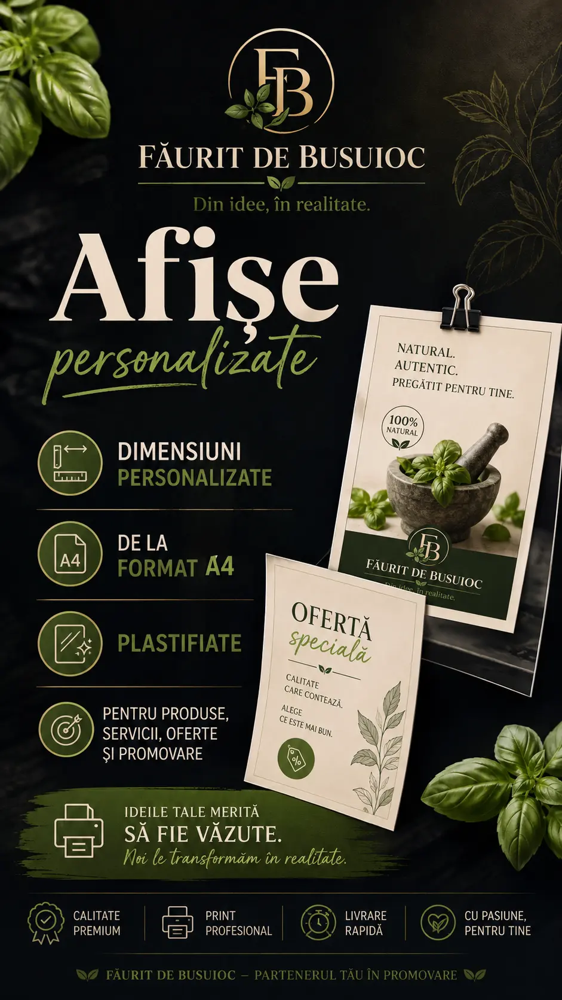

Firme & magazine
Servicii, date de contact, program și comunicare în spațiul comercial.
Afișe create pentru a atrage atenția și a transmite mesajul clar: de la formate standard până la dimensiuni personalizate pentru afaceri, evenimente, promovare sau decor.

Designul este adaptat scopului, spațiului și publicului căruia i se adresează.
Servicii, date de contact, program și comunicare în spațiul comercial.
Reduceri, lansări, campanii și produse puse în evidență.
Anunțuri, programe, prezentări și materiale pentru promovare.
Meniuri, tarife, servicii și informații organizate clar.
Compoziții pentru amintiri, cadouri și proiecte personale.
Design pentru casă, birou, atelier sau spații comerciale.

Putem pregăti afișul în formate uzuale sau într-o dimensiune personalizată, în funcție de spațiul unde va fi expus.
Textul, pozele, logo-ul și datele care trebuie să apară.
Spui formatul dorit sau trimiți măsurile exacte ale spațiului.
Pregătim conceptul vizual și verifici toate informațiile.
După confirmare stabilim materialul, finisarea și termenul.
Putem porni de la un mesaj, câteva fotografii sau o schiță. Organizăm conținutul, alegem stilul și pregătim afișul pentru dimensiunea finală.

Potrivit pentru print tip poster, vitrine, pereți, rame, panouri interioare, meniuri și materiale promoționale.
Potrivit pentru suprafețe mari, fațade, garduri, șantiere și utilizări unde este necesar un material flexibil.
Vezi pagina Bannere →Spune unde va fi folosit afișul și ce trebuie să conțină. Îți pregătim varianta potrivită și discutăm detaliile pe WhatsApp.
Oferta se stabilește după dimensiune, material, finisare, design și cantitate. Nu sunt afișate prețuri fixe.